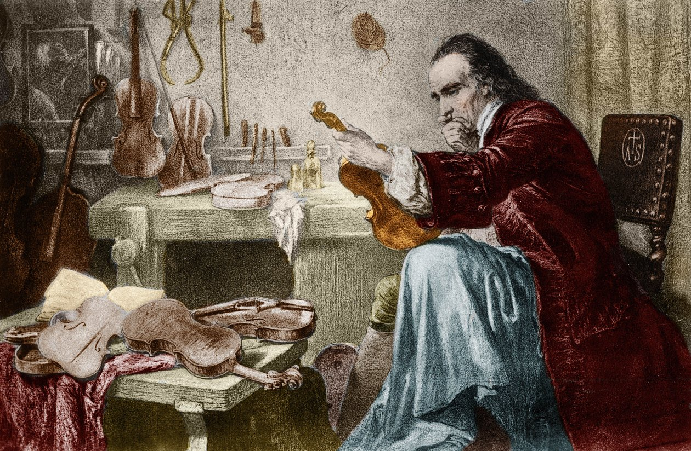
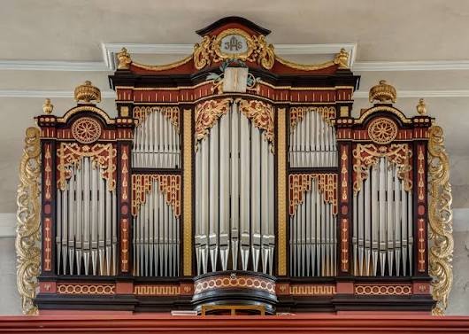
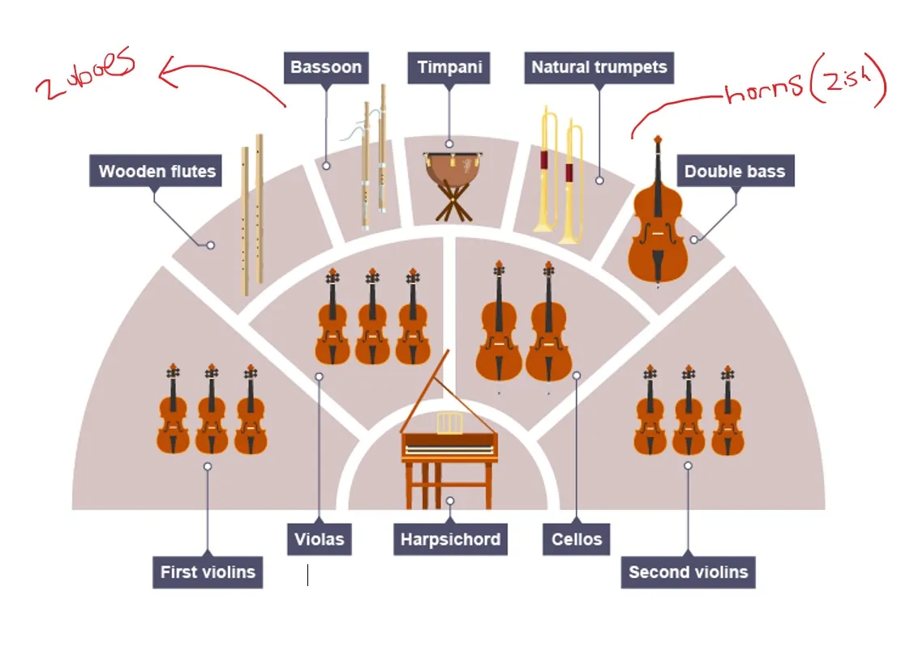

Como hemos visto, el Barroco es un periodo de gran desarrollo de la música instrumental, frente al dominio que tenía la polifonía vocal en el Renacimiento. En el periodo barroco, los instrumentos alcanzaron gran perfección, construyéndose ya de manera similar a los actuales. Es la época de los grandes luthiers (constructores de instrumentos), como el italiano Stradivari, cuyos instrumentos de cuerda, denominados Stradivarius, se siguen considerando los mejores del mundo.

El órgano
Un instrumento que alcanzó un gran desarrollo en el Barroco fue el órgano, instrumento que compositores como Haendel y Bach tocaban con una gran maestría. Se construyeron espectaculares órganos de tubos en iglesias y catedrales. Este instrumento se acciona a través de uno o varios teclados cuyas teclas abren unas válvulas para que el aire generado por un fuelle haga sonar los tubos, que, dependiendo de su forma y tamaño, poseen diferentes sonoridades. Estos órganos también incorporaron una pedalera para tocar las notas más graves (bajo continuo) con los pies.

La orquesta en el Barroco
En el Barroco, en gran parte gracias a la perfección técnica que alcanzaron los instrumentos de cuerda frotada (violín, viola, violonchelo y contrabajo), surgió el concepto de orquesta tal y como la concebimos ahora. En este periodo encontramos orquestas reducidas en comparación con las actuales. Estaban constituidas, básicamente, por la sección de cuerda frotada y el clave, instrumento de teclado que apoyaba con acordes el bajo continuo. No obstante, la orquesta barroca, sobre todo en sus comienzos, no contaba con un conjunto fijo de instrumentos, sino que dependía en muchas ocasiones del número de instrumentistas disponibles.

Además, se incluían, en función de cada composición, instrumentos de viento madera (flauta, oboe y fagot), de viento metal (trompetas y trompas) y de percusión (timbales). Una formación habitual constaba de alrededor de veinticinco músicos. A diferencia de las orquestas actuales, el director solía dirigir sentado mientras tocaba el clave.